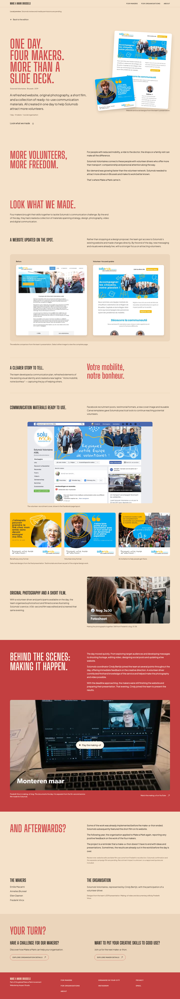
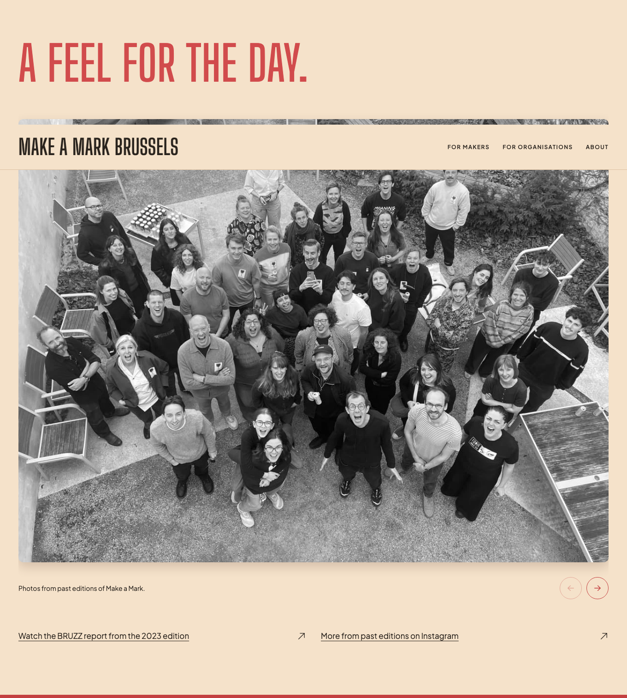
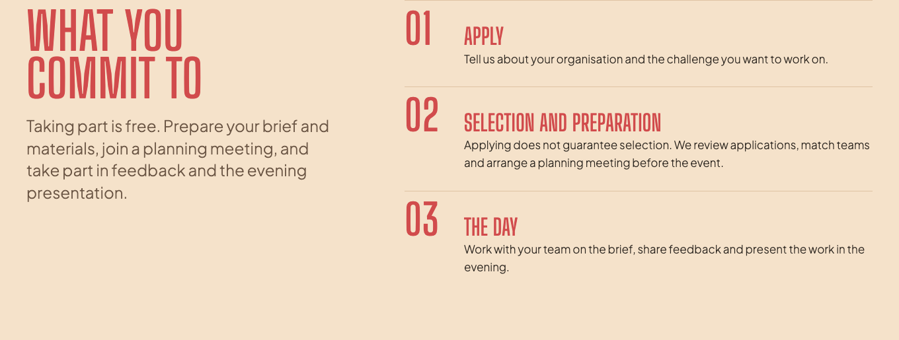
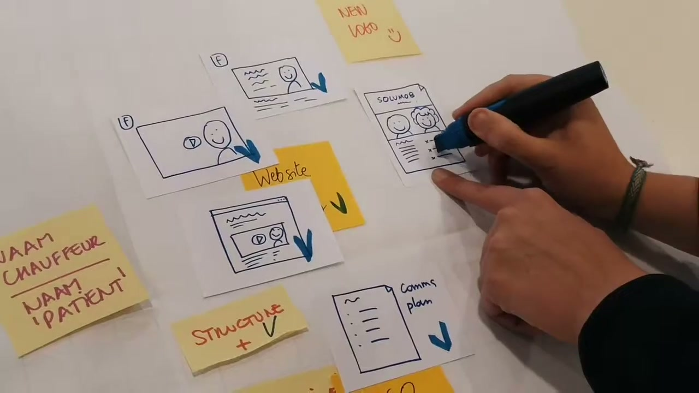

One case. Two audiences. A concrete example of what makers and a social organisation can create together in a day.
The approved case page and recommended links are built locally. The review below records the selected homepage and audience-page placements.
Results first, people and process next. The supplied draft is styled with native images from the original presentation. Organisation validation and media permissions remain pending.

Uses the existing navigation, footer, palette and type. Original presentation images now show the deliverables; documentary stills show the process. The making-of loads on click. Unapproved quotes are omitted.
Recommendation: one visual homepage feature and a quieter invitation on each audience page. Each link leads to the same case. These are placement sketches, awaiting selection.


A refreshed website, photography, a short film and tools for reaching volunteers. See what four makers and Solumob created together.
See what we made for Solumob →
Why here: the photos convey the event’s atmosphere; the case adds a close look at the work. Keep the feature below the participation routes and edition details. The existing photo carousel stays in place.
/organisations · after “What you commit to”
See how Solumob and four makers turned a volunteer-recruitment challenge into practical communication materials.
Explore the Solumob case →The organisation application follows. The case explains the kind of collaboration; Solumob’s 2019 project does not change the 2027 youth-work eligibility.
/makers · after “What you commit to”
Meet the team behind Solumob’s website updates, photography and short film. See how the day unfolded.
Go behind the scenes with Solumob →The maker application follows. A single contextual link keeps the form within easy reach.
Link the existing Solumob Volontaires name to the approved case. The roster already supports organisation URLs. Use an underline so the linked name is recognisable among the other organisations.
The existing structure already anticipates individual case pages when content exists. The exact route and links below are proposed for approval.
/Edition + featured Solumob story/makersMaker invitation + contextual case link/organisationsOrganisation invitation + contextual case link/case-studies/solumobNew: shared case-study page/privacyExisting application privacy noticeThe case ends with “Explore organisation details” and “Explore maker details,” returning readers to the existing journeys.
Approve the content wireframe and sitemap before custom styling, then choose which proposed links to build. These decisions do not publish the case.
Solumob’s review, original deliverables, media rights and approved quotes remain a separate publication step. Recruitment impact is unknown.